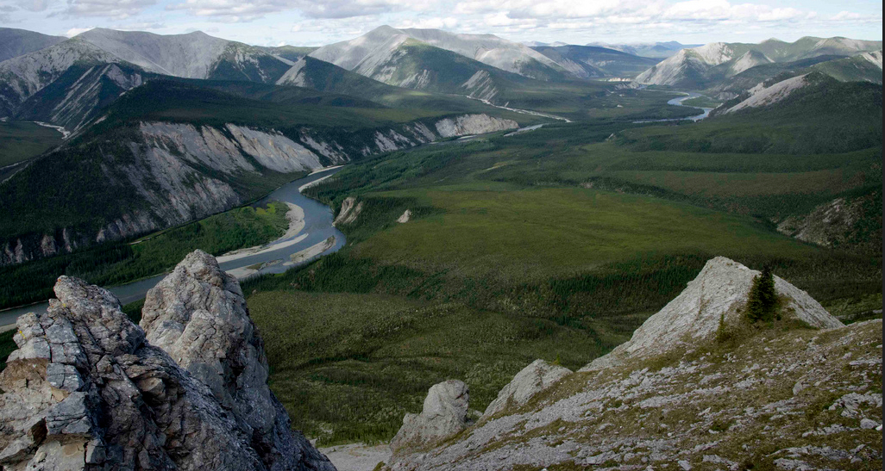
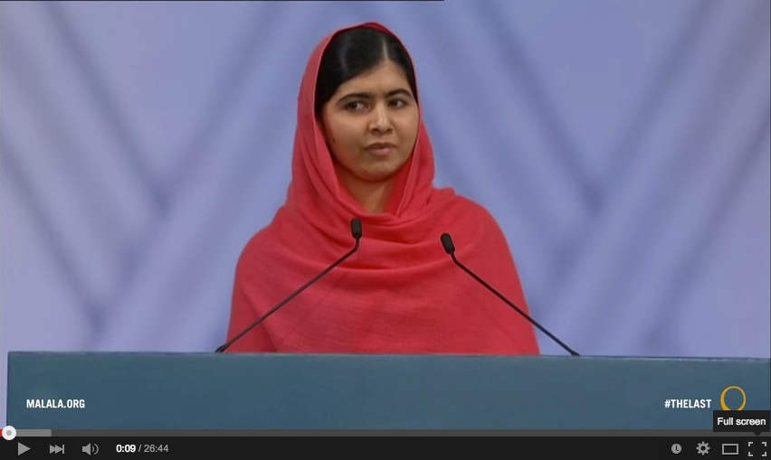
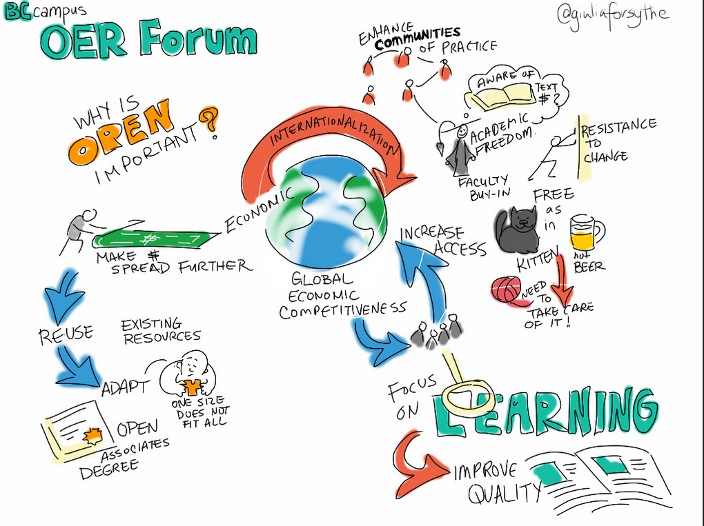
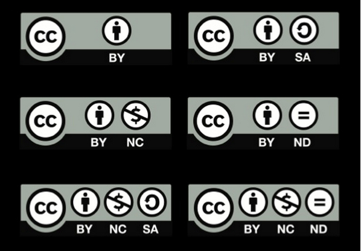
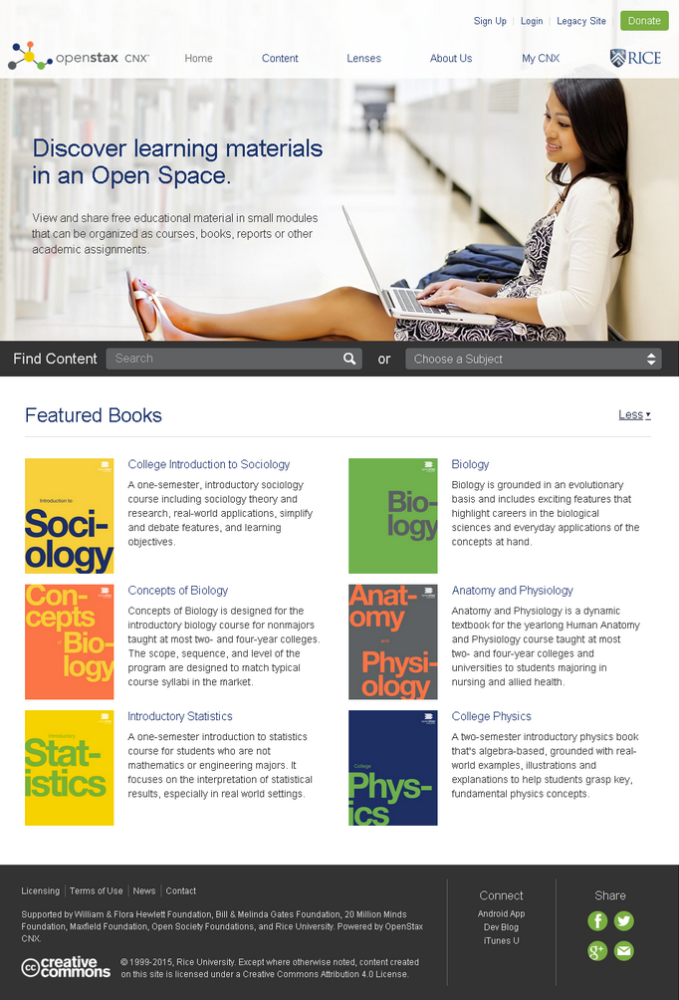
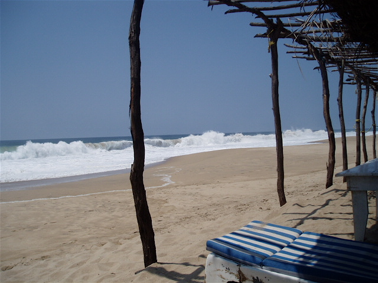
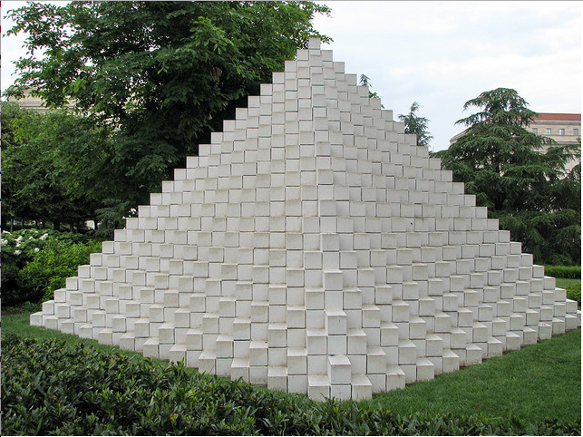
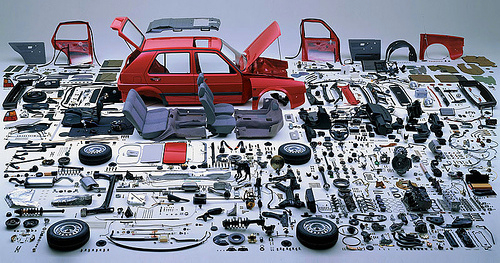

Chapter 10
Teaching in a Digital Age

Also in this chapter you will find the following activities:
Over a number of years, research faculty in the Departments of Land Management and Forestry at the University of Western Canada developed a range of digital graphics, computer models and simulations about watershed management, partly as a consequence of research conducted by faculty, and partly to generate support and funding for further research.
At a faculty meeting several years ago, after a somewhat heated discussion, faculty members voted, by a fairly small majority, to make these educational resources openly available for re-use for educational purposes under a Creative Commons license that requires attribution and prevents commercial use without specific written permission from the copyright holders, the faculty responsible for developing the artefacts. What swayed the vote is that the majority of the faculty actively involved in the research wanted to make these resources more widely available. The agencies responsible for funding the work that lead to the development of the learning artefacts (mainly national research councils) welcomed the move to makes these artefacts more widely available as open educational resources.
Initially, the researchers just put the graphics and simulations up on the research group’s web site. It was left to individual faculty members to decide whether to use these resources in their teaching. Over time, faculty started to introduce these resources into a range of on-campus undergraduate and graduate courses.
After a while, though, word seemed to get out about these OER. Research members began to receive e-mails and phone calls from other researchers around the world. It became clear that there was a network or community of researchers in this field who were creating digital materials as a result of their research, and it made sense to share and re-use materials from other sites. This eventually led to an international web ‘portal’ of learning artefacts on watershed management.
The researchers also started to get calls from a range of different agencies, from government ministries or departments of environment, local environmental groups, First Nations/aboriginal bands, and, occasionally, major mining or resource extraction companies, leading to some major consultancy work for the faculty in the departments. At the same time, the faculty were able to attract further research funding from non-governmental agencies such as the Nature Conservancy and some ecological groups, as well as from their traditional funding source, the national research councils, to develop more OER.
By this time, the departments had access to a fairly large amount of OER. There were already two fourth and fifth level fully online courses built around the OER that were being offered successfully to undergraduate and graduate students.
A proposal was therefore put forward to create initially a fully online post-graduate certificate program on watershed management, built around existing OER, in partnership with a university in the USA and another one in Sierra Leone. This certificate program was to be self-funding from tuition fees, with the tuition fees for the 25 Sierra Leone students to be initially covered by an international aid agency. The Dean, after a period of hard negotiation, persuaded the university administration that the departments’ proportion of the tuition fees from the certificate program should go directly to the departments, who would hire additional tenured faculty from the revenues to teach or backfill for the certificate, and the departments would pay 25 per cent of the tuition revenues to the university as overheads.
This decision was made somewhat easier by a fairly substantial grant from Foreign Affairs Canada to make the certificate program available in English and French to Canadian mining and resource extraction companies with contracts and partners in African countries.
Although the certificate program was very successful in attracting students from North America, Europe and New Zealand, it was not taken up very well in Africa beyond the partnership with the university in Sierra Leone, although there was a lot of interest in the OER and the issues raised in the certificate courses. After two years of running the certificate, then, the departments made two major decisions:
- another three courses and a research project would be added to the certificate courses, and this would be offered as a fully cost recoverable online master in watershed resource management. This would attract greater participation from managers and professionals in African countries in particular, and provide a recognised qualification that many of the certificate students were requesting;
- drawing on the very large network of external experts now involved one way or another with the researchers, the university would offer a series of MOOCs on watershed management issues, with volunteer experts from outside the university being invited to participate and provide leadership in the MOOCs. The MOOCs would be able to draw on the existing OER.
Five years later, the following outcomes were recorded by the Dean at an international conference on sustainability:
- the online master’s program had doubled the total number of graduate students in her Faculty;
- the master’s program was fully cost-recoverable from tuition fees;
- there were 120 graduates a year from the master’s program;
- the degree completion rate was 64 per cent;
- six new tenured faculty had been hired, plus another six post-doctoral research staff;
- several thousand students had registered and paid for at least one course in the certificate or master’s program, of which 45 per cent were from outside Canada;
- over 100,000 students had taken the MOOCs, almost half from developing countries;
- there were now over 1,000 hours of OER on watershed management available and downloaded many times across the world;
- the university was now internationally recognised as a world leader in watershed management.
Although this scenario is purely a figment of my imagination, it is influenced by real and exciting work being done by the following at the University of British Columbia:

In recent years, there has been a resurgence of interest in open learning, mainly related to open educational resources and MOOCs. Although in themselves OER and MOOCs are important developments, they tend to cloud other developments in open education that are likely have even more impact on education as a whole. It is therefore necessary to step back a little to get a broader understanding of not just OER and MOOCs, but open learning in general. This will help us better understand the significance of these and other developments in open education, and their likely impact on teaching and learning now and in the future.
Open education can take a number of forms:
Each of these developments is discussed in more detail below, except for MOOCs, which are discussed extensively in Chapter 5.
Open education is primarily a goal, or an educational policy. An essential characteristic of open education is the removal of barriers to learning. This means no prior qualifications to study, no discrimination by gender, age or religion, affordability for everyone, and for students with disabilities, a determined effort to provide education in a suitable form that overcomes the disability (for example, audio recordings for students who are visually impaired). Ideally, no-one should be denied access to an open educational program. Thus open learning must be scalable as well as flexible.
State-funded public education is the most extensive and widespread form of open education. For example, the British government passed the 1870 Education Act that set the framework for schooling of all children between the ages of 5 and 13 in England and Wales. Although there were some fees to be paid by parents, the Act established the principle that education would be paid for mainly through taxes and no child would be excluded for financial reasons. Schools would be administered by elected local school boards. Over time, access to publicly funded education in most economically developed countries has been widened to include all children up to the age of 18. UNESCO’s Education for All (EFA) movement is a global commitment to provide quality basic education for all children, youth and adults, supported, at least in principle, by 164 national governments. Nevertheless today there are still many millions of ‘out-of-school’ children worldwide.
Access to post-secondary or higher education though has been more limited, partly on financial grounds, but also in terms of ‘merit’. Universities have required those applying for university to meet academic standards determined by prior success in school examinations or institutional entry exams. This has enabled elite universities in particular to be highly selective. However, after the Second World War, the demand for an educated population, both for social and economic reasons, in most economically advanced countries resulted in the gradual expansion of universities and post-secondary education in general. In most OECD countries, roughly 35-60 per cent of an age cohort will go on to some form of post-secondary education. Especially in a digital age, there is an increasing demand for highly qualified workers, and post-secondary education is a necessary gateway to most of the best jobs. Therefore there is increasing pressure for full and free open access to post-secondary, higher or tertiary education.
However, as we saw in Chapter 1, the cost of widening access to ever increasing numbers results in increased financial pressure on governments and taxpayers. Following the financial crisis of 2008, many states in the USA found themselves in severe financial difficulties, which resulted in substantial cuts to the U.S. higher education system. Thus solutions that enable increased access without a proportionate increase in funding are almost desperately being sought by governments and institutions. It is against this background that the recent interest in open education should be framed.
As a result, open is increasingly (and perhaps misleadingly) being associated with ‘free’. While the use of open materials may be free to the end user (learners), there are real costs in creating and distributing open education, and supporting learners, which has to be covered in some way. Thus a sustainable and adequate system of publicly funded education is still the best way to ensure access to quality education for all. Other forms of open education are steps towards achieving fully open access to higher education.
In the 1970s and 1980s, there was a rapid growth in the number of open universities that required no or minimal prior qualifications for entry. In the United Kingdom, for instance, in 1969, less than 10 per cent of students leaving secondary education went on to university. This was when the British government established the Open University, a distance teaching university open to all, using a combination of specially designed printed texts, and broadcast television and radio, with one week residential summer schools on traditional university campuses for the foundation courses (Perry, 1976). The Open University started in 1971 with 25,000 students in the initial entry intake, and now has over 200,000 registered students. It has been consistently ranked by government quality assurance agencies in the top ten U.K. universities for teaching, and in the top 30 for research, and number one for student satisfaction (out of over 180). It currently has over 200,000 registered students. However, it can no longer cover the full cost of its operation from government grants and there is now a range of different fees to be paid.
There are now nearly 100 publicly funded open universities around the world, including Canada (Athabasca University and Téluq). These open universities are often very large. The Open University of China has over one million enrolled undergraduate students and 2.4 million junior high school students, Anadolou Open University in Turkey has over 1.2 million enrolled undergraduate students, the Open University of Indonesia (Universitas Terbuka) almost half a million, and the University of South Africa 350,000. These large, degree awarding national open universities provide an invaluable service to millions of students who otherwise would have no access to higher education (see Daniel, 1998, for a good overview).
It should be noted however that there is no publicly funded open university in the USA, which is one reason why MOOCs have received so much attention there. The Western Governors’ University is the most similar to an open university, and private, for-profit universities such as the University of Phoenix fill a similar niche in the market.
As well as the national open universities, which usually offer their own degrees, there is also the OERu, which is basically an international consortium of mainly British Commonwealth and U.S. universities and colleges offering open access courses that enable learners either to acquire full credit for transfer into one of the partner universities or to build towards a full degree, offered by the university from which most credits have been acquired. Students pay a fee for assessment.
Open, distance, flexible and online learning are rarely found in their ‘purest’ forms. No teaching system is completely open (minimum levels of literacy are required, for instance). Thus there are always degrees of open-ness. Open-ness has particular implications for the use of technology. If no-one is to be denied access, then technologies that are available to everyone need to be used. If an institution is deliberately selective in its students, it has more flexibility with regard to choice of technology for distance education. It can for instance require all students who wish to take an online or blended course to have their own computer and Internet access. It cannot do that if its mandate is to be open to all students. Truly open universities then will always be behind the leading edge of educational applications of technology.
Despite the success of many open universities, open universities often lack the status of a campus-based institution. Their degree completion rates are often very low. The U.K. OU’s degree completion rate is 22 per cent (Woodley and Simpson, 2014), but nevertheless still higher for whole degree programs than for most single MOOC courses.
Lastly, some of the open universities have been established for more than 40 years and have not always quickly adapted to changes in technology, partly because of their large size and their substantial prior investment in older technologies such as print and broadcasting, and partly because they do not wish to deny access to potential students without the latest technology. Thus open universities are now increasingly challenged by both an explosion in access to conventional universities, which has taken up some of their market, and new developments such as MOOCs and open educational resources, which are the topic of the next section.
Daniel, J. (1998) Mega-Universities and Knowledge Media: Technology Strategies for Higher Education. London: Kogan Page
Perry, W. (1976) The Open University Milton Keynes: Open University Press
Woodley, A. and Simpson, O. (2014) ‘Student drop-out: the elephant in the room’ in Zawacki-Richter, O. and Anderson, T. (eds.) (2014) Online Distance Education: Towards a Research Agenda Athabasca AB: AU Press, pp. 508

Open educational resources are somewhat different from open learning, in that they are primarily content, while open learning includes both content and educational services, such as specially designed online materials, in-built learner support and assessment.
Open educational resources cover a wide range of online formats, including online textbooks, video recorded lectures, YouTube clips, web-based textual materials designed for independent study, animations and simulations, digital diagrams and graphics, some MOOCs, or even assessment materials such as tests with automated answers. OER can also include Powerpoint slides or pdf files of lecture notes. In order to be open educational resources, though, they must be freely available for at least educational use.
David Wiley is one of the pioneers of OER. He and colleagues have suggested (Hilton et al., 2010) that there are five core principles of open publishing:
This open textbook you are reading meets all five criteria (it has a CC BY-NC license – see Section 10.2.2 below). Users of OER though need to check with the actual license for re-use, because sometimes there are limitations, as with this book, which cannot be reproduced without permission for commercial reasons. For example, it cannot be turned into a book for profit by a commercial publisher, at least without written permission from the author. To protect your rights as an author of OER usually means publishing under a Creative Commons or other open license.
This seemingly simple idea, of an ‘author’ creating a license enabling people to freely access and adapt copyright material, without charge or special permission, is one of the great ideas of the 21st century. This does not take away someone’s copyright, but enables that copyright holder to give permission automatically for different kinds of use of their material without charge or any bureaucracy.

The are now several possible Creative Commons licenses:
If you wish to offer your own materials as open educational resources, it is a relatively simple process to choose a licence and apply it to any piece of work (see Creative Commons Choose a License). If in doubt, check with a librarian.
There are many ‘repositories’ of open educational resources (see for instance, for post-secondary education, MERLOT, OER Commons, and for k-12, Edutopia).The Open Professionals Education Network has an excellent guide to finding and using OER.
However, when searching for possible open educational resources on the web, check to see whether or not the resource has a Creative Commons license or a statement giving permission for re-use. It may be common practice to use free (no cost) resources without worrying unduly about copyright, but there are risks without a clear license or permission for re-use. For instance, many sites, such as OpenLearn, allow only individual, personal use for non-commercial purposes, which means providing a link to the site for students rather than integrating the materials directly into your own teaching. If in any doubt about the right to re-use, check with your library or intellectual property department.
The take-up of OER by instructors is still minimal, other than by those who created the original version. The main criticism is of the poor quality of many of the OER available at the moment – reams of text with no interaction, often available in PDFs that cannot easily be changed or adapted, crude simulation, poorly produced graphics, and designs that fail to make clear what academic concepts they are meant to illustrate.
Falconer (2013), in a survey of potential users’ attitudes to OER in Europe, came to the following conclusion:
The ability of the masses to participate in production of OER – and a cultural mistrust of getting something for nothing – give rise to user concerns about quality. Commercial providers/publishers who generate trust through advertising, market coverage and glossy production, may exploit this mistrust of the free. Belief in quality is a significant driver for OER initiatives, but the issue of scale-able ways of assuring quality in a context where all (in principle) can contribute has not been resolved, and the question of whether quality transfers unambiguously from one context to another is seldom [addressed]. A seal of approval system is not infinitely scale-able, while the robustness of user reviews, or other contextualised measures, has not yet been sufficiently explored.
If OER are to be taken up by others than the creators of the OER, they will need to be well designed. It is perhaps not surprising then that the most used OER on iTunes University were the Open University’s, until the OU set up its own OER portal, OpenLearn, which offers as OER mainly textual materials from its courses designed specifically for online, independent study. Once again, design is a critical factor in ensuring the quality of an OER.
Hampson (2013) has suggested another reason for the slow adoption of OER, mainly to do with the professional self-image of many faculty. Hampson argues that faculty don’t see themselves as ‘just’ teachers, but creators and disseminators of new or original knowledge. Therefore their teaching needs to have their own stamp on it, which makes them reluctant to openly incorporate or ‘copy’ other people’s work. OER can easily be associated with ‘packaged’, reproductive knowledge, and not original work, changing faculty from ‘artists’ to ‘artisans’. It can be argued that this reason is absurd – we all stand on the shoulders of giants – but it is the self-perception that’s important, and for research professors, there is a grain of truth in the argument. It makes sense for them to focus their teaching on their own research. But then how many Richard Feynmans are there out there?
There is also considerable confusion between ‘free’ (no financial cost) and ‘open’, which is compounded by lack of clear licensing information on many OER. For instance, Coursera MOOCs are free, but not ‘open’: it is a breach of copyright to re-use the material in most Coursera MOOCs within your own teaching without permission. The edX MOOC platform is open source, which means other institutions can adopt or adapt the portal software, but institutions even on edX tend to retain copyright. However, there are exceptions on both platforms: a few MOOCs do have an open licence.
There is also the issue of the context-free nature of OER. Research into learning shows that content is best learned within context (situated learning), when the learner is active, and that above all, when the learner can actively construct knowledge by developing meaning and ‘layered’ understanding. Content is not static, nor a commodity like coal. In other words, content is not effectively learned if it is thought of as shovelling coal into a truck. Learning is a dynamic process that requires questioning, adjustment of prior learning to incorporate new ideas, testing of understanding, and feedback. These ‘transactional’ processes require a combination of personal reflection, feedback from an expert (the teacher or instructor) and even more importantly, feedback from and interaction with friends, family and fellow learners.
The weakness with open content is that by its nature, at its purest it is stripped of these developmental, contextual and ‘environmental’ components that are essential for effective learning. In other words, OER are just like coal, sitting there waiting to be loaded. Coal of course is still a very valuable product. But it has to be mined, stored, shipped and processed. More attention needs to be paid to those contextual elements that turn OER from raw ‘content’ into a useful learning experience. This means instructors need to build learning experiences or environments into which the OER will fit.
For a useful overview of the research on OER, see the Review Project from the Open Education Group. Another important research project is ROER4D, which aims to provide evidence-based research on OER adoption across a number of countries in South America, Sub-Saharan Africa and Southeast Asia.
Despite these limitations, teachers and instructors are increasingly creating open educational resources, or making resources freely available for others to use under a Creative Commons license. There are increasing numbers of repositories or portals where faculty can access open educational resources. As the quantity of OER expands, it is more likely that teachers and instructors will increasingly be able to find the resources that best suit their particular teaching context.
There are therefore several choices:
Learners can use OER to support any type of learning. For instance, MIT’s OpenCourseWare (OCW) could be used just for interest, or students who struggle with the topics in a classroom lecture for a credit course may well go to OCW to get an alternative approach to the same topic (see Scenario B).
Despite some of the current limitations or weaknesses of OER, their use is likely to grow, simply because it makes no sense to create everything from scratch when good quality materials are freely and easily available. We have seen in Chapter 8 on selecting media that there is now an increasing amount of excellent open material available to teachers and instructors. This will only grow over time. We shall see in Section 11.10 that this is bound to change the way courses are designed and offered. Indeed, OER will prove to be one of the essential features of teaching in a digital age.
Falconer, I. et al. (2013) Overview and Analysis of Practices with Open Educational Resources in Adult Education in Europe Seville, Spain: European Commission Institute for Prospective Technological Studies
Hampson, K. (2013) The next chapter for digital instructional media: content as a competitive difference Vancouver BC: COHERE 2013 conference
Hilton, J., Wiley, D., Stein, J., & Johnson, A. (2010). The four R’s of openness and ALMS Analysis: Frameworks for open educational resources. Open Learning: The Journal of Open and Distance Learning, 25(1), 37–44
See also:
Li, Y, MacNeill, S., and Kraan, W. (undated) Open Educational Resources – Opportunities and Challenges for Higher Education Bolton UK: JISC_CETIS

Textbooks are an increasing cost to students. Some textbooks cost $200 or more, and in North America a university undergraduate may be required to spend between $800-$1,000 a year on textbooks. An open textbook on the other hand is an openly-licensed, online publication free for downloading for educational or non-commercial use. You are currently reading an open textbook. There is an increasing number of sources for open textbooks, such as OpenStax College from Rice University, and the Open Academics Textbook Catalog at the University of Minnesota.
In British Columbia, the provincial government is funding the B.C. open textbook project, in collaboration with the provinces of Alberta and Saskatchewan. The B.C. open textbook project focuses on making available openly-licensed textbooks in the highest-enrolled academic subject areas and also in trades and skills training. In the B.C. project, as in many of the other sources, all the books are selected, peer reviewed and in some cases developed by local faculty. Often these textbooks are not ‘original’ work, in the sense of new knowledge, but carefully written and well illustrated summaries of current thinking in the different subject areas.
Students and governments, through grants and financial aid, pay billions of dollars each year on textbooks. Open textbooks can make a significant impact on reducing the cost of education.
There are also other considerations. It is a common sight to see lengthy line-ups at college bookstores all through the first week of the first semester (which eats into valuable study time). Because students may be searching for second-hand versions of the books from other students, it may well be into the second or third week of the semester before students actually get their copy. Cable Green of the Creative Commons has pointed to research that shows that when first year math students have their textbooks from the first day, they do much better than students who often do not get the key textbook until three weeks into the course. He also pointed to research from Florida Virtual Campus that indicates that many students (over 60 per cent) simply do not buy all the required textbooks, for a variety of reasons, but the main one being cost (Green, 2013).
So why shouldn’t government pay the creators of textbooks directly, cut out the middleman (commercial publishers), save over 80 per cent on the cost, and distribute the books to students (or anyone else) for free over the Internet, under a Creative Commons license? Cable Green’s ‘vision’ for open textbooks is: 100 per cent of students have 100 per cent free, digital access to all materials by day one.
Murphy (2103) questions the whole idea of textbooks, whether open or not. She sees textbooks as a relic of 19th century industrialism, a form of mass broadcasting. In the 21st century, students should be finding, accessing and collecting digital materials over the Internet. Textbooks are merely packaged learning, with the authors doing the work for students. Nevertheless, it has to be recognized that textbooks are still the basic currency for most forms of education, and while this remains the case, open textbooks are a much better alternative for students than expensive printed textbooks.
Quality also remains a concern. There is an in-built prejudice that ‘free’ must mean poor quality.Thus the same arguments about quality of OER also apply to open textbooks. In particular, the expensive commercially published textbooks usually include in-built activities, supplementary materials such as extra readings, and even assessment questions.
Others (including myself) question the likely impact of ‘open’ publishing on creating original works that are not likely to get subsidized by government because they are either too specialized, or are not yet part of a standard curriculum for the subject; in other words will open publishing impact negatively on the diversity of publishing? What is the incentive for someone now to publish a unique work, if there is no financial reward for the effort? Writing an original, single authored book remains hard work, however it is published.
Although there is now a range of ‘open’ publishing services, there are still costs for an author to create original work. Who will pay, for instance, for specialized graphics, for editing or for review? I have used my blog to get sections of my book reviewed, and this has proved extremely useful, but it is not the same as having top experts in the field doing a systematic review before publication.
Marketing is another issue. It takes time and specialised knowledge to market books effectively. On the other hand, my experience, having published twelve books commercially, is that publishers are very poor at properly marketing specialised textbooks, expecting the author to mainly self-market, while the publisher still takes 85-90 per cent of all sales revenues. Nevertheless there are real costs in marketing an open textbook.
How can all these costs be recovered? Much more work still needs to be done to support the open publishing of original work in book format. If so, what does that mean for how knowledge is created, disseminated and preserved? If open textbook publishing is to be successful, new, sustainable business models will need to be developed. In particular, some form of government subsidy or financial support for open textbooks is probably going to be essential.
Nevertheless, although these are all important concerns, they are not insurmountable problems. Just getting a proportion of the main textbooks available to students for free is a major step forward.
BC campus has mounted a short MOOC on the P2PU portal on Adopting Open Textbooks. Although the MOOC may not be active when you access the site, it still has most of the materials, including videos, available.
Governments in some countries such as the USA, Canada and the United Kingdom are requiring all research published as a result of government funding to be openly accessible in a digital format. In Canada, the Minister of State for Science and Technology announced (February 27, 2015) that:
The harmonized Tri-Agency Open Access Policy on Publications requires all peer-reviewed journal publications funded by one of the three federal granting agencies to be freely available online within 12 months.
Also in Canada, Supreme Court decisions and new legislation in 2014 means that it is much easier to access and use free of charge online materials for educational purposes, although there are still some restrictions.
Commercial publishers, who have dominated the market for academic journals, are understandably fighting back. Where an academic journal has a high reputation and hence carries substantial weight in the assessment of research publications, publishers are charging researchers for making the research openly available. The kudos of publishing in an established journal acts as a disincentive for researchers to publish in less prestigious open journals without having to pay to get published.
However, it can only be a question of time before academics fight back against this system, by establishing their own peer reviewed journals that will be perceived to be of the highest standard by the quality of the papers and the status of the researchers publishing in such journals. Once again, though, open research publishing will flourish only by meeting the highest standards of peer review and quality research, by finding a sustainable business model, and by researchers themselves taking control over the publishing process.
Over time, therefore, we can expect nearly all academic research in journals to become openly available.
In 2004, the Science Ministers of all nations of the OECD, which includes most developed countries of the world, signed a declaration which essentially states that all publicly funded archive data should be made publicly available. Following an intense discussion with data-producing institutions in member states, the OECD published in 2007 the OECD Principles and Guidelines for Access to Research Data from Public Funding.
The two main sources of open data are from science and government. In science, the Human Genome Project is perhaps the best example, and several national or provincial governments have created web sites to distribute a portion of the data they collect, such as the B.C. Data Catalogue in Canada.
Again, increasing amounts of important data are becoming openly available, providing more resources with high potential for learning.
The significance for teaching and learning of the developments in open access, OER, open textbooks and open data will be explored more fully in the next section.
Green, C. (2013) Open Education, MOOCs, Student Debt, Textbooks and Other Trends Vancouver BC: COHERE 2013 conference
Murphy, E. (2103) Day 2 panel discussion Vancouver BC: COHERE 2013 conference (video: 4’40” from start)
Although in recent years MOOCs have been receiving all the media attention, I believe that developments in open educational resources, open textbooks, open research and open data will be far more important than MOOCs and far more revolutionary. Here are some reasons why.

Eventually most academic content will be easily accessible and freely available through the Internet – for anyone. This could well mean a shift in power from teachers and instructors to students. Students will no longer be dependent particularly on instructors as their primary source of content. Already some students are skipping lectures at their local institution because the teaching of the topic is better and clearer on OpenCourseWare, MOOCs or the Khan Academy. If students can access the best lectures or learning materials for free from anywhere in the world, including the leading Ivy League universities, why would they want to get content from a middling instructor at Midwest State University? What is the added value that this instructor is providing for their students?
There are good answers to this question, but it means considering very carefully how content will be presented and shaped by a teacher or instructor that makes it uniquely different from what students can access elsewhere. For research professors this may include access to their latest, as yet unpublished, research; for other instructors, it may be their unique perspective on a particular topic, and for others, a unique mix of topics to provide an integrated, inter-disciplinary approach. What will not be acceptable to most students is repackaging of ‘standard’ content that can easily be found elsewhere on the Internet and at a higher quality.
Furthermore, if we look at knowledge management as one of the key skills needed in a digital age, it may be better to enable students to find, analyze, evaluate and apply content than for instructors to do it for them. If most content is available elsewhere, what students will look for increasingly from their local institutions is support with their learning, rather than the delivery of content. This means directing them to appropriate sources of content, helping when students are struggling with concepts, and providing opportunities for students to apply their knowledge and to develop and practice skills. It means giving prompt and relevant feedback as and when students need it. Above all, it means creating a rich learning environment in which students can study (see Appendix 1). It means moving teaching from information transmission to knowledge management, from selecting, structuring and delivering content to learner support.
Thus for most students within their university or college (with the possible exception of the most advanced research universities) the quality of the learning support will eventually matter more than the quality of content delivery, which they can get from anywhere. This is a major challenge for instructors who see themselves primarily as content experts.

The creation of open educational resources, either as small learning objects but increasingly as short ‘modules’ of teaching, from anywhere between five minutes to one hour of material, and the increasing diversification of markets, is beginning to result in two of the key principles of OER being applied, re-use and re-mix. In other words, the same content, available in an openly accessible digital form, may be integrated into a range of different applications, and/or combined with other OER to create a single teaching module, course or program, as in Scenario H.
The Ontario government, through its online course development fund, is encouraging institutions to create OER. As a result, several universities have brought together faculty within their own institution but working in different departments that teach the same area of content (for example, statistics) to develop ‘core’ OER that can be shared between departments. The logical next step would be for statistics faculty across the Ontario system to get together and develop an integrated set of OER modules on statistics that would cover substantial parts of the statistics curriculum. Working together would have the following benefits:
As the range and quality of OER increases, instructors (and students) will be able to build curriculum through a set of OER ‘building blocks’. The aim would be to reduce instructor time in creating materials (perhaps focusing on creating their own OER in areas of specific subject or research expertise), and using their time more in supporting student learning than in delivering content.
Open education and digitisation enable what has tended to be offered by institutions as a complete bundle of services to be split out and offered separately, depending on the market for education and the unique needs of individual learners. Learners will select and use those modules or services that best fit their needs. This is likely to be the pattern for lifelong learners in particular. Some early indications of this process are already occurring, although most of the really significant changes are yet to come.

This is a service already offered by Empire State University, a part of the State University of New York. Adult learners considering a return to study or a career change can receive mentoring about what courses and combinations they can take from within the college that fit with their previous life and their future wishes. In essence, within boundaries potential students are able to design their own degree. In the future, some institutions might specialise in this kind of service at a system level.
Students may have already determined what they want to study through the Internet, such as a MOOC. What they are looking for is help with their studies: how to write assignments, where to look for information, feedback on their work and thinking. They are not necessarily looking for a credit, degree or other qualification, but if they are they will pay for assessment separately. Currently, students pay private tutors for this service. However, it is feasible that institutions could also provide this service, provided that a suitable business model can be built.
Learners may feel that through prior study and work, they are able to take a challenge exam for credit. All they require from the institution is a chance to be assessed. Institutions such as Western Governors’ University or the Open Learning division of Thompson Rivers University are already offering this service, and this would be a logical next step for the many other universities or colleges with some form of prior learning assessment or PLAR.
Learners may have acquired a range of credits, badges or certificates from a range of different institutions. The institution assesses these qualifications and experiences and helps the learner to take any further studies that are necessary, then awards the qualification. Prior learning assessment or PLAR is one step in this direction, but not the only one.
For learners who cannot or do not want to attend campus, the cost would be lower for a such courses than for students receiving a full campus experience.
In this case, the learner is not looking for any qualification, but wants access to content, particularly new and emerging knowledge. MOOCs are one example, but other examples include OpenLearn and open textbooks.
This would be the ‘traditional’ integrated package that full-time, campus-based students now receive. This would though be fully costed and much more expensive than any of the other disaggregated services.
Note that I have been careful not to link any of these services to a specific funding model. This is deliberate, because it could be:
Whatever the funding model, institutions will need to be able to price different services accurately.
In any case, there is now an increasing diversity of learners’ needs, from high school students wanting full-time education, graduate students wanting to do research, and lifelong learners, most of whom will have already passed through a publicly funded higher education system, wanting to keep learning either for vocational or personal reasons. This increasing diversity of needs requires a more flexible approach to providing educational opportunities in a digital age. Disaggregation of services and new models of funding, combined with increased accessibility to free, open content, are some ways in which this flexibility can be provided. For alternative views on this issue, see Carey, 2015; Large, 2015.
The increasing availability of high quality open content is likely to facilitate the shift from information transmission by the instructor to knowledge management by the learner. Also in a digital age there is a need for greater focus on skills development embedded within a subject domain than on the memorisation of content.
The use of open educational resources could enable these developments in a number of ways, such as:
These developments are likely to lead to a severe reduction in lecture-based teaching and a move towards more project work, problem-based learning and collaborative learning. It will also result in a move away from fixed time and place written examinations, to more continuous, portfolio-based forms of assessment.
The role of the instructor then will shift to providing guidance to learners on where and how to find content, how to evaluate the relevance and reliability of content, what content areas are core and what peripheral, and to helping students analyse, apply and present information, within a strong learning design that focuses on clearly defined learning outcomes, particularly with regard to the development of skills. Students will work mainly online and collaboratively, developing multi-media learning artefacts or demonstrations of their learning, managing their online portfolios of work, and editing and presenting selected work for assessment.
Despite all the hoopla around MOOCs, they are essentially a dead end with regard to providing learners who do not have adequate access to education with what they want: high quality qualifications. The main barrier to education is not lack of cheap content but lack of access to programs leading to credentials, either because such programs are too expensive, or because there are not enough qualified teachers, or both. Making content free is not a waste of time (if it is properly designed for secondary use), but it still needs a lot of time and effort to integrate it properly within a learning framework.
Open educational resources do have an important role to play in online education, but they need to be properly designed, and developed within a broader learning context that includes the critical activities needed to support learning, such as opportunities for student-instructor and peer interaction, and within a culture of sharing, such as consortia of equal partners and other frameworks that provide a context that encourages and supports sharing. In other words, OER need skill and hard work to make them useful, and selling them as a panacea for education does more harm than good.
Although open and flexible learning and distance education and online learning mean different things, the one thing they all have in common is an attempt to provide alternative means of high quality education or training for those who either cannot take conventional, campus-based programs, or choose not to.
Lastly, there are no insurmountable legal or technical barriers now to making educational material free. The successful use of OER does though require a particular mindset among both copyright holders – the creators of materials – and users – teachers and instructors who could use this material in their teaching. Thus the main challenge is one of cultural change.
In the end, a well-funded public higher education system remains the best way to assure access to higher education for the majority of the population. Having said that, there is enormous scope for improvements within that system. Open education and its tools offer a most promising way to bring about some much needed improvements.
This is just my interpretation of how approaches to ‘open’ content and resources could radically change the way we teach and how students will learn in the future. At the beginning of this chapter there is a scenario I created which suggests how this might play out in one particular program.
More importantly, there is not just one future scenario, but many. The future will be determined by a host of factors, many outside the control of teachers and instructors. But the strongest weapon we have as teachers is our own imagination and vision. Open content and open learning reflect a particular philosophy of equality and opportunity created through education. There are many different ways in which we as teachers, and even more our learners, can decide to apply that philosophy. However, the technology now offers us many more choices in making these decisions. Thus there is scope for many more scenarios that aim to extend access and educational opportunities.
Carey, K. (2015) The End of College New York: Riverhead Books
Large, L. (2015) Rebundling College Inside Higher Ed, April 7
Teaching in a Digital Age: Guidelines for designing teaching and learning by Dr. Tony Bates (CC BY-NC).
Photos: reproduced from the original open textbook (each figure is credited in its caption).
Design: HTML template based on work by HTML5 UP.